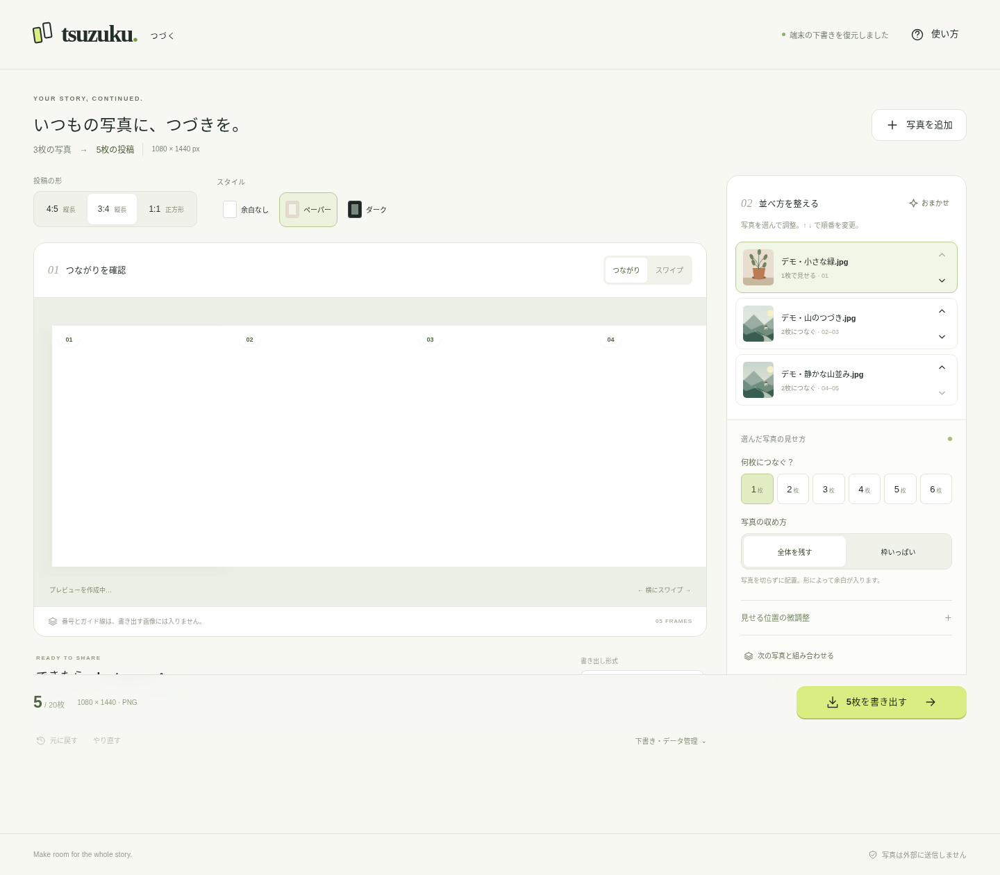

最初は2つだけ。
この説明を読む → Codexに渡す依頼文を、tsuzuku-studioフォルダと一緒に渡す。
自分で試す場合は npm run dev から始めます。
作成日：2026年9月5日。これは、前回納品した実装・資料と、別添の説明・画面キャプチャをひとつに集めた持ち帰り版です。このZIPだけをMacへ持っていけば、前回のZIPや個別添付を別に集める必要はありません。
このガイドは、同じフォルダの 01_MAC_GUIDE.html でも読めます。HTML版は説明書なのでダブルクリックで開けます。アプリ本体の index.html は、ダブルクリックではなく、以下の起動コマンドで開いてください。
1. まず何をすればよいか
ZIPをMacに保存し、Finderで展開します。展開した tsuzuku-studio フォルダを、開発用の好きな場所に置いてください。中の一部のファイルだけを取り出さず、フォルダごと扱います。以前の作業フォルダがある場合、そちらを上書きせず別の場所で展開してください。
最初に 00_READ_ME_FIRST.txt を開きます。操作を自分で始める場合はこのガイドの「Macで起動」を、Codexから始める場合は「Codexへの引き継ぎ」を読んでください。Macでの確認だけなら、GitHubへの登録・公開はまだ不要です。
| 今したいこと | 開くもの／行うこと |
|---|---|
| 全体の説明を読む | 01_MAC_GUIDE.html または MAC_HANDOFF.md |
| Codexに続きを依頼する | フォルダを作業対象にし、02_CODEX_REQUEST.txt の全文を渡す |
| とりあえずMacで試す | フォルダ内で npm run dev → デモを開く |
| 自分のiPhoneで使う | Macで確認 → GitHub Pages等でHTTPS公開 → Safariで開く |
| 詳細な仕様を読む | docs/REQUIREMENTS.md と docs/ARCHITECTURE.md |
| 全ファイルを確認する | PACKAGE_CONTENTS.txt |
2. 会話で確定したこと
目的は、iPhoneの写真から、ページをスワイプすると横長写真がつながって見えるInstagramのフィード投稿用画像を、手軽に作ることです。例えば、横長写真Aを1〜2枚目にまたがらせ、後続のページに別の写真を組み合わせます。
最終投稿はInstagramアプリで手動で行います。 このWebアプリは画像を作って書き出すところまでで、Instagramのログインや自動投稿は行いません。
編集は自動配置＋簡単な修正を優先します。複雑な自由編集を増やすことより、写真を選んだら使える初期配置ができ、必要なところだけ直せることを重視します。
アプリのログイン不要、写真のサーバー送信なし、端末間の自動同期なしが確定条件です。写真の処理はブラウザ内で行います。MacBookのCodexで継続開発し、自分のGitHubでコードを管理して公開できる形を希望しています。
GitHubへの開発用の認証と、アプリを使うときのログインは別の話です。アプリにログインを追加する必要はありませんが、自分のGitHubにコードを置くときは自分のGitHubアカウントで認証します。
3. 入っているもの・まだ行っていないこと
このフォルダには、編集画面、画像の読み込み・分割・書き出し、下書き保存の実装済みソースが入っています。要件定義だけの雛形ではありません。
元のZIPに入っていた79ファイルは内容を変えずに残しています。ソース、ビルド済みの dist/、起動／ビルド用スクリプト、82件の単体テスト、ブラウザテスト、GitHub Actionsの設定、要件定義、設計書、引き継ぎ文、公開手順、検証記録、出力例、スクリーンショット、ライセンスを含みます。
今回追加したのは、この総合ガイド、最初に読む説明、Codex用の依頼文、梱包時の検証記録、全ファイル一覧とチェックサム、会話に別添されていた3点の画面キャプチャです。別添の開始手順・要件定義・最終版のデスクトップ画像は、元のZIP内のものと同内容だったため、その既存ファイルで網羅しています。
GitHubへのpush・リポジトリ作成・本番デプロイは行っていません。MacのSafari、iPhone実機でのHEIC取り込み、写真アプリへの保存、Instagram投稿も未確認です。 それらはMacへ持ち帰った後の確認事項として明記しています。
Node.js本体、Mac/iPhoneのブラウザ、Codex本体、Git/GitHubのアカウントや認証情報、Pythonの任意テスト用ライブラリは同梱していません。あなたの実写真や本物の下書きも入っていません。コードと資料を持ち帰るために、このチャットを読み直す必要はない構成です。
4. Macで起動する
必要な環境
このプロジェクトの package.json の条件は Node.js 22.12.0以上です。同梱の .nvmrc は22系を指定しています。今回再検証に使用した環境はLinuxのNode.js 22.16.0／npm 10.9.2です。Macの実行環境で検証したという意味ではありません。
ターミナルで node --version と npm --version を実行して確認します。Node.jsがない、または条件を満たさない場合は、Mac側でNode.jsを用意してから進めます。導入方法は既存のMac環境によって異なるため、Codexへ「このプロジェクトのNode.js条件を満たしているか確認し、未導入なら公式の導入手順を確認して案内して」と渡してください。すでにNode管理ツールを使っているMacでは、別方式を重ねて入れず、その環境を使います。
通常の起動、単体テスト、ビルドには、npm install、APIキー、環境変数、データベースは不要です。ブラウザテストだけは任意の追加環境が必要です。
フォルダへ移動する
Macの「ターミナル」を開き、cd と入力します。最後に半角スペースを入れ、そのあとFinderから tsuzuku-studio フォルダをターミナルへドラッグし、Enterを押してください。これで実際の保存場所に移動できます。
次を実行し、現在の場所に package.json が見えることを確認します。
pwd
ls
node --version
npm --version
アプリを起動する
npm run dev
Macのブラウザで http://localhost:5173 を開きます。まずは「まずはデモで試す」を選びます。写真を用意しなくても、配置・調整・書き出しの流れを確認できます。
ターミナルにサーバーの案内が出て止まって見えるのは、起動したまま待ち受けている状態です。利用中はそのターミナルを開いておきます。終了は Control + C です。
このアプリの開発サーバーは標準でMac自身から使う設定です。Macでの localhost をそのままiPhoneに入力しても、このMacのアプリは開けません。 iPhone実機での本番確認は、後述のHTTPS公開URLで行います。
ソースと配信用ビルドを確認する
開発サーバーを終了してから、次の順に実行します。
npm run check
npm test
npm run build
npm run preview
再び http://localhost:5173 を開きます。npm run dev は開発中のソースを、npm run preview は dist/ に生成された配信用ファイルを配信します。ソースを変更した後は、プレビューや公開の前に必ず npm run build を実行してください。
同じポートを使う開発サーバーを二重に起動しないでください。別ポートが必要な場合は npm run dev -- --port 5174 または npm run preview -- --port 5174 を使い、http://localhost:5174 を開きます。
5. 写真を選んで、つながる画像を作る
基本の流れは 写真選択 → おまかせ配置 → 必要な部分だけ修正 → プレビュー → 書き出し → 保存 → Instagramアプリで投稿 です。
最初は、横長写真1枚で試します。写真の設定を「2枚」「全体を残す」にし、横につながった表示と1枚ずつの表示で見え方を確認してください。書き出して保存した後、Instagramアプリでは左側の画像、右側の画像の順に選びます。
| できること | この実装の内容 |
|---|---|
| 自動配置 | 写真の縦横比から分割数を提案。写真の内容を理解するAIではありません。 |
| つながる分割 | 1写真・1組につき1〜6枚。1つの横長レイアウトからページを切り出します。 |
| 簡単な修正 | 順番、分割数、全体表示／枠いっぱい、拡大、縦横位置、背景、元に戻す・やり直し。 |
| 2写真の組み合わせ | 隣の写真と一組にし、上下／左右に並べる、または重ねる。組み合わせの選択は手動です。 |
| 確認 | 横につながった表示と、1枚ずつのスワイプ表示。 |
| 書き出し | JPEG／PNG、連番、同じサイズ。画像内にページ番号や透かしを加えません。 |
| 保存 | 対応環境でのファイル共有、個別保存・画像を開く、ZIP。 |
| 下書き | このブラウザに1件自動保存。任意で .tsuzuku ファイルに保存・再読み込み。 |
位置や拡大は画面の設定で調整する実装です。自由ドラッグやピンチ操作による総合キャンバスエディターを実装済みと解釈しないでください。
余白と切り取りの違い
左右の画像を別々に切り取らず、写真全体に共通の位置・拡大率を適用してからページごとに描画します。ページの継ぎ目で構図が変わらないための設計です。
元写真と、つないだ投稿枠の形が違う場合、写真の全体を残すなら外側に余白が必要です。「枠いっぱい」は余白を減らす代わりに、写真の一部が切れることがあります。「全体を残す」「余白ゼロ」「好きな投稿比率」の3つを常に同時には満たせません。
例として、3:2の横長写真に対し、3:4を2枚つなぐと同じ3:2になります。一方、4:5を2枚つなぐと8:5なので、3:2の写真とは比率が異なります。
初期値は4:5、JPEG、「全体を残す」、装飾用の外枠を加えないスタイルです。「余白なし」というスタイル名でも、比率差による外側の余白まで消す意味ではありません。
入力・出力の上限と画質
実装上の入力は最大20写真、1ファイル40MBまでです。JPEG／PNG／WebPに対応し、HEICはブラウザが読み込める場合に対応します。すべてのHEICファイルでの成功を保証しません。
出力は最大20枚です。4:5は1080×1350、3:4は1080×1440、1:1は1080×1080で、1つの投稿内は同じサイズにそろえます。これは同梱アプリの仕様であり、Instagram側の今後の仕様変更まで固定するものではありません。プラットフォーム側の根拠は docs/SOURCES.md に残しています。
元の写真ファイルは変更しません。 ただし端末内の作業用コピーは長辺4096px・約8MP以内のJPEGへ変換します。PNGで書き出しても、この取り込み時のJPEG化をなかったことにはできません。透明部分は白になり、元EXIFなどのメタデータ、元のHDR・広色域特性・透過をそのまま保持する用途ではありません。無加工・無劣化の分割ツールではありません。
極端なパノラマ、低解像度の画像、多数の高解像度写真では、画質やメモリに制約が出る可能性があります。上限以内なら、どのiPhoneでも快適に扱えるという保証ではありません。
6. iPhoneに保存し、Instagramアプリで投稿する
書き出しで画像が生成されたら、対応環境では「共有メニューを開く」を使います。iPhone側に画像保存の項目があれば選んでください。表示される項目や複数枚保存の可否は端末側によります。
一括保存が使えなければ、書き出し一覧の1枚ずつの「保存」や「画像を開く」を使います。画像を開いた後も、利用可能な保存操作は端末側で確認してください。ダウンロードが「ファイル」に入った場合と「写真」に保存された場合を区別し、写真アプリに必要な全枚数がそろっているか実際に確認します。ZIPは特にMacでまとめて受け取る用途です。ZIPをそのままInstagramの複数画像として投稿する設計ではありません。
Instagramアプリで新規のフィード投稿を作り、複数選択で 01 → 02 → 03… の順に選びます。写真アプリの表示順や、ファイル名だけに頼らず、アプリの書き出し一覧と見た目を照合してください。画像ごとの切り抜き・回転を変えず、投稿前のプレビューでつながりと比率を確認します。
Webアプリで共有処理が完了したことは、「写真」に保存されたことやInstagramへの投稿が完了したことの証明ではありません。保存・投稿の最後の確認はユーザーが行います。Instagram側での表示・再圧縮も、このアプリからは制御できません。
7. 下書きとプライバシー
下書きはその端末・そのブラウザの保存領域に1件です。Macでの編集がiPhoneに自動で出てくることはありません。複数タブの同時編集にも対応していないため、同じ下書きは1つのタブで扱ってください。
サイトデータの削除、容量不足、ブラウザの動作などで下書きが失われる可能性があります。大切な編集は任意の .tsuzuku ファイルにも保存します。ファイルを手動で持ち運んで読み込むことはできますが、これは端末間の自動同期ではありません。
.tsuzuku には作業用写真が含まれます。外部に共有したり、Gitへ追加したりしないでください。下書きファイルの読み込み上限は100MBで、このアプリが扱う形式を対象にしています。汎用ZIPや他社アプリのプロジェクトを開く機能ではありません。
アプリが写真をサーバーへ送らなくても、初回アクセスや更新ではアプリ本体の取得通信があります。配信事業者の通常のアクセスログや、ユーザー自身が選んだ共有先、写真・ファイルのOS側クラウド同期までは、このアプリの制御対象ではありません。
「このブラウザのデータを消す」操作は、アプリ内の写真・下書きに対する操作です。元の写真や、すでに保存した出力まで削除するものではありません。
8. Codexへの引き継ぎ
MacのCodexで tsuzuku-studio フォルダ全体を作業対象にします。dist/ だけや画像だけを渡さないでください。続いて、同梱の 02_CODEX_REQUEST.txt の全文を依頼文として貼り付けます。
依頼文には、確定条件、最初に読む資料、Macの環境確認、構文確認・テスト・ビルド、GitHub管理、HTTPS公開、iPhone実機での最短経路の確認、未確認事項の扱い、pushや公開の前にユーザーへ確認する条件をまとめています。既存実装を全面的に作り直さないことも明記しました。
AGENTS.md は継続開発で維持する条件、docs/CODEX_HANDOFF.md は元の引き継ぎ資料です。コード変更時はこれらと要件定義を優先し、入口である写真の取り込みと、出口である保存が使いやすいかを先に確認してください。
テストには合成画像・デモを使います。実写真、下書き、個人情報が写ったスクリーンショットをCodexや外部ツールへ送って調査する運用にしないでください。 iPhone上の実写真の確認結果は、端末型番・OS版・エラーメッセージ・操作手順など、必要な事実を文章で伝えます。
9. 自分のGitHubで管理する
詳細な元手順は docs/DEPLOY.md にあります。作業場所は、package.json と .github/ がある tsuzuku-studio フォルダです。このZIP自体をリポジトリに置くのではなく、展開したソースを管理します。
Mac側でGitと自分のGitHubの認証を用意し、空のリポジトリを作成します。リポジトリ名の例は tsuzuku-studio です。初回のコマンド例を使う場合、GitHub側でREADME等を事前作成していない空のリポジトリを用意すると、初回履歴の衝突を避けやすくなります。既存リポジトリに入れるときはCodexに既存状態を確認させます。
Publicにしたリポジトリ内のコードと資料は公開されます。 リポジトリの公開範囲と、Pagesの利用条件・公開範囲は、Macで設定するときに確認してください。ユーザーのアカウント名・リポジトリ名・認証情報・公開範囲をこちらで決めてはいません。
以下は新しいGit管理を始めるときの例です。YOUR_GITHUB_REPOSITORY_URL はGitHubに表示される自分のSSHまたはHTTPSのリポジトリURLに置き換えます。そのまま入力する値ではありません。
git init
git add .
git status --short
ここで必ず対象ファイルを確認します。個人写真・秘密情報がないことを確認してから次へ進みます。
git commit -m "Initial local-only carousel editor"
git branch -M main
git remote add origin YOUR_GITHUB_REPOSITORY_URL
git remote -v
公開先・公開範囲をユーザー自身が確認した後に、初めてpushします。
git push -u origin main
Gitに作者名・メールアドレスの設定を求められた場合は、Mac側で使用する値を決めます。推測した他人の値やダミーの認証情報を入れないでください。リポジトリが既にGit管理されている、origin が既にある、リモートに履歴がある場合は、上の初回コマンドを繰り返さず、git status と git remote -v を確認し、Codexへ現状を伝えます。強制pushで解決しないでください。
.gitignore は dist/、node_modules/、.env、.env.*、private-photos/、exports/、*.tsuzuku、test-results/、.venv/ などを除外します。ただし個人写真の自動検出機能ではありません。 別の場所に写真を置くとGitの対象になる可能性があります。commit前の確認を省略しないでください。合成されたデモ画像・テスト用fixture・既存の画面例は同梱物です。
認証情報、アクセストークン、秘密鍵は、チャット・コード・資料・Gitに書き込みません。アプリ用のAPIキーや .env は不要です。
10. iPhone用のHTTPS URLを公開する
GitHub Pages向けの .github/workflows/pages.yml を同梱しています。元資料の手順では、リポジトリの Settings → Pages → Build and deployment → Source で GitHub Actions を選びます。実際の管理画面や利用条件は設定時に確認してください。
同梱ワークフローはmainへのpush、または手動実行で構文チェック・テスト・ビルドを行い、dist/ だけを公開アーティファクトにします。開発フォルダ全部をWebサイトとして配信する構成ではありません。一方、Publicリポジトリ自体のソースと資料は別途公開される点には注意してください。
初回push時にPages設定が未完了だった場合は、設定後に Actions → Deploy to GitHub Pages → Run workflow で再実行します。失敗時はジョブのログを読み、成功したことを確認します。公開URLはGitHubの設定画面や完了したActionsに表示されたものを使い、推測したURLだけで公開成功と判断しないでください。
公開URLをHTTPSで開き、デモと書き出しを確認します。利用できる設定ではHTTPSの強制を有効にします。その後、そのURLをiPhoneのSafariで開きます。iPhoneからMacのHTTPローカルIPを開く方法は、この納品版の標準確認経路ではありません。
このアプリはURLを開いた人が使える構成です。あなたの写真や下書きをサイトに掲載する設計ではありませんが、アプリ自体へのアクセス制限も付いていません。
日常利用の入口としてホーム画面へ追加する場合は、Safari側の共有・ホーム画面追加の機能を使います。具体的な表示はiOS版により異なります。ホーム画面からの起動・保存・下書きについても、Safariのタブからの利用と分けて実機確認します。
別の静的ホスティングを使う場合の構成は、ビルドコマンド npm run build、配信対象 dist/、HTTPSです。サーバーの常時稼働、写真アップロードAPI、データベースは作りません。サービス側が解析・外部スクリプト等を自動挿入する場合も、写真を送らないという条件に影響しないか確認してください。
11. 検証済みと、未確認を分ける
今回の再梱包時には、この同梱コードで npm run check、npm test、npm run build が成功しました。構文確認は16モジュール、単体テストは82件です。既存79ファイルは、ビルド後も元のZIPとバイト単位で同一でした。
元の納品時の記録には、LinuxのChromiumを使った19ブラウザシナリオ、スマホ幅の表示、JPEG／PNG生成、画像境界、下書き復元、共有APIの模擬テスト、オフライン確認等が含まれています。詳細は docs/TESTING.md、docs/browser-results.json、docs/test-command-results.txt にあります。その19シナリオは今回の再梱包では再実行していません。
追加した今回の確認内容は docs/PACKAGING_REPORT.md と docs/packaging-validation.txt に区別して記録しています。Linuxのテストやスマホ幅の表示確認を、iPhone実機の確認済みという意味に読み替えないでください。
最優先の実機チェックは次の経路です。
公開HTTPS URL → iPhoneの横長写真1枚 → 2枚につなぐ → 2枚とも写真アプリに保存 → Instagramで順番に選択 → プレビューでつながりを確認。
その後に、実HEICの向き・色、JPEG／PNG、複数保存と個別保存、共有のキャンセル、保存順、実写真5〜10枚での負荷、ホーム画面起動、オフライン、下書き復元を確認します。チェック表は docs/TESTING.md にあります。端末型番、iOS版、起動方法、実際のメニュー文言、結果を記録してください。
任意のブラウザテストを再実行する
通常の起動には不要ですが、描画・画像保存を修正した場合などは、元の docs/TESTING.md に従ってブラウザテストを実行します。Python環境が必要です。
ターミナルAで、プロジェクトフォルダから次を実行し、サーバーを起動したままにします。
npm run build
npm run dev
別のターミナルBも同じフォルダへ移動してから、次を実行します。初回の依存導入にはネットワーク接続が必要です。
python3 -m venv .venv
source .venv/bin/activate
pip install -r requirements-dev.txt
python -m playwright install chromium
python tests/browser-smoke.py --base-url http://127.0.0.1:5173/dist/
テスト出力は test-results/ に生成され、標準ではGit対象外です。テスト用のPythonライブラリやブラウザ本体は、このZIPに含めていません。WebKitでの追加確認方法も元の検証資料にありますが、その結果もiPhone実機の代わりではありません。
12. 困ったときの確認
| 状況 | まず確認すること |
|---|---|
node / npm が見つからない |
MacのNode.js導入状態を確認。アプリのnpm依存を入れる問題とは別です。 |
package.json がない／スクリプトがない |
ターミナルが tsuzuku-studio の中か、pwd と ls で確認。 |
EADDRINUSE が出る |
既に起動しているサーバーをControl + Cで終了するか、別ポートを使う。 |
| HTMLを開いてもアプリが動かない | index.html の直接起動をやめ、npm run dev からlocalhostを開く。 |
| Macでは動くがiPhoneで開けない | Macのlocalhostではなく、実際に公開されたHTTPS URLか確認。 |
| HEICが読めない | 端末・ブラウザ・ファイルの条件を記録し、JPEG等で切り分け。外部変換サイトへの送信で回避しない。 |
| 「全体を残す」でも余白がある | 元写真と全ページをつないだ枠の比率差。切り取りを許容するか、比率・分割数を調整。 |
| 写真が意図せず切れる | 「枠いっぱい」と拡大率を確認し、「全体を残す」に戻して比較する。 |
| 保存項目が出ない | 共有メニューと個別保存を切り分け、HTTPS・ブラウザ・実際の表示を確認する。 |
| 保存後の順番が違う | アプリの連番と画像内容で確認し、Instagramで左から正しい順に選び直す。 |
| 書き出し後の画質が足りない | 元写真の解像度、作業用縮小、拡大率、分割数を確認。出力幅だけで元の細部は増えません。 |
| 下書きが出ない | 同じ端末・ブラウザ・URLで開いているか、サイトデータを削除していないか確認。バックアップがあれば読み込む。 |
| 更新が見えない | ビルド、push、Actions成功、公開URLを順に確認。下書き退避前にサイトデータを消さない。 |
| Pagesの処理が失敗した | 設定、権限、対象ブランチ、失敗ジョブのログを確認。公開済みと決めつけない。 |
| Gitが認証や作者情報を求める | 自分のMacとGitHubの設定を確認。トークンや秘密鍵をチャットへ貼らない。 |
同じサイトのデータを消す操作は、キャッシュだけでなく下書きにも影響する可能性があります。更新の切り分けでデータ削除が必要になった場合も、先に下書きファイルを退避します。
13. この版で行わないこと
外部AIによる構図認識・自動ペアリング、自由ドラッグ・回転・文字入れ、動画・Live Photoの動画部分・RAW現像、複数プロジェクト一覧、複数タブの競合制御、すべてのHEIC変種に対応する変換、無加工・無劣化の分割は未実装または対象外です。
ログイン、クラウドへの写真保存、自動同期、Instagram API、自動投稿・予約投稿、アクセス解析も追加していません。今回の目的を満たすために、これらを必須の開発項目に戻さないでください。
14. 継続開発と更新
まず実機の取り込みと保存を確認し、その後で操作数や配置提案を少しずつ改善します。写真をサーバーに送らない、左右を同じ座標で切り出す、共有ボタンのクリックから直ちに共有を呼ぶ、1ページずつ描画してメモリ消費を抑える、という設計を維持します。
変更後は npm run check、npm test、npm run build を実行します。画像処理・共有・保存を変えたときはブラウザテストとiPhone実機チェックも行います。差分と個人ファイルの混入を確認してcommitし、ユーザーの了承後にpushします。Actionsが成功し、公開URLで変更が見えることまで確認してください。
dist/ は生成物でありGit管理対象外です。そこだけを直接編集せず、元ソースを編集して再ビルドします。元ソースと公開物を別々の実装として育てないでください。
15. 資料とファイルの地図
| 場所 | 内容 |
|---|---|
00_READ_ME_FIRST.txt |
最初に読む短い案内。標準のテキストエディタで開けます。 |
01_MAC_GUIDE.html |
この総合ガイドの見やすいHTML版。外部通信なしで説明を読めます。 |
02_CODEX_REQUEST.txt |
そのまま渡せる、今回の持ち帰り版の依頼文。 |
MAC_HANDOFF.md |
このガイドのMarkdown原稿。 |
START_HERE.md |
前回、別添でも渡した開始手順。 |
README.md |
元のアプリ説明、機能、制約、コマンド。 |
AGENTS.md |
継続開発で維持する条件。 |
docs/REQUIREMENTS.md |
要件定義・対象範囲・受け入れ条件。 |
docs/ARCHITECTURE.md |
分割座標、画像処理、保存、設計判断。 |
docs/DEPLOY.md |
GitHub管理とPagesの公開・更新。 |
docs/CODEX_HANDOFF.md |
元のCodex引き継ぎ、優先順位と未実装。 |
docs/TESTING.md |
元の検証内容、再実行方法、実機チェック表。 |
docs/SOURCES.md |
設計時の一次資料と、その資料の位置付け。 |
docs/browser-results.json |
元のブラウザシナリオの結果。 |
docs/test-command-results.txt |
元の構文・テスト・ビルドの記録。 |
docs/PACKAGING_REPORT.md |
今回の統合範囲、検証、未確認事項。 |
docs/packaging-validation.txt |
今回再実行したコマンドの出力。 |
docs/screenshots/ |
元の最終版の画面例。実機iPhoneの写真ではありません。 |
docs/screenshots/conversation/ |
会話に別添されていた別版・別サイズの画面例。最終版との差を残して保管。 |
examples/panorama-2/ |
デモを実際に2枚に書き出した例。01.png、02.png、説明。 |
src/、styles/、public/ |
アプリのJavaScript、CSS、アイコン。 |
index.html、manifest.webmanifest、sw.js |
アプリの入口、ホーム画面用情報、キャッシュ処理。 |
scripts/ |
開発配信、構文チェック、ビルド。 |
tests/、requirements-dev.txt |
単体・ブラウザテストと任意のPythonテスト依存。 |
dist/ |
ビルド済みの配信対象。変更後は再ビルド。 |
package.json、package-lock.json、.nvmrc |
実行コマンドとNode環境の条件。 |
.github/workflows/ |
CIとGitHub Pages公開用の設定。 |
.gitignore、LICENSE |
Git対象外の設定、元のMITライセンス。 |
PACKAGE_CONTENTS.txt、CHECKSUMS.sha256 |
全ファイルの一覧と整合性確認。 |
Finderでドットから始まる名前が見えなくても、ZIPには .github/、.gitignore、.nvmrc、dist/.nojekyll を含めています。確認するときはターミナルの ls -a が使えます。
16. ZIPの整合性を任意で確かめる
ZIPを展開した直後、フォルダ内で次を実行すると、同梱ファイルの内容をSHA-256で確認できます。
shasum -a 256 -c CHECKSUMS.sha256
チェックサムファイル自身は対象外です。これは輸送中の破損や意図しない差を見つける補助で、デジタル署名や第三者による安全性証明ではありません。開発でファイルを変更した後は、そのファイルが元のチェックサムと違うこと自体は正常です。
最初の一歩は、Macで tsuzuku-studio を開き、デモを動かすか、02_CODEX_REQUEST.txt を渡すことです。 このフォルダ全体を手元に置けば、仕様の理解・コードの確認・継続開発・公開・実機確認を同じ場所から進められます。
画面と出力例
以下は同梱のデモを使った画面・出力例です。iPhone実機での保存成功を示すものではありません。


モバイル幅の編集画面 ／ 書き出し画面 ／ 今回の梱包記録